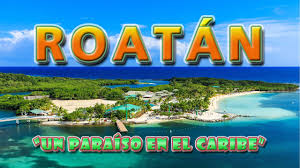
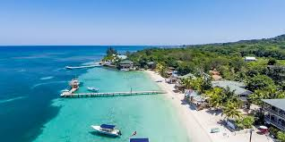
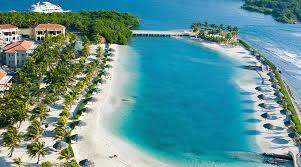
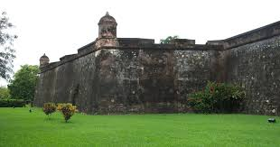
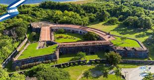
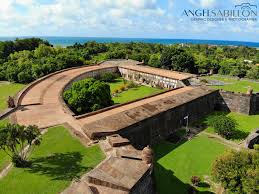
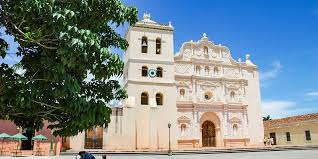
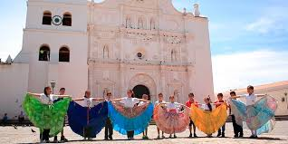
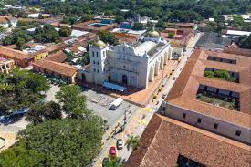

Símbolos Patrios
Los símbolos patrios de Honduras representan la historia, cultura y soberanía del país, dividiéndose en mayores y menores.
Símbolos Nacionales Mayores
- La Bandera: Creada en 1866 y modificada en 1949, consta de tres franjas horizontales (azul, blanca, azul) y cinco estrellas azules que representan a las naciones de la antigua Federación Centroamericana.
- El Escudo Nacional: Contiene una pica y gorro frigio (libertad), el pino (riqueza forestal), volcanes (territorio) y laureles (victoria), simbolizando la historia, soberanía y recursos naturales.
- El Himno Nacional: Su letra narra cronológicamente la historia de Honduras, desde la época prehispánica hasta la independencia.

Historia Breve
Honduras, oficialmente República de Honduras, es un país ubicado en el centro de América Central con costas en el mar Caribe al norte y en
el océano Pacífico al sur.[10] Honduras es un estado unitario, y se autodefine como libre, soberano e independiente. Tegucigalpa, junto
con Comayagüela, constituyen el Distrito Central, por lo tanto las dos ciudades juntas forman la capital del país, siendo el primer y más
grande núcleo urbano de Honduras.
La organización territorial de Honduras divide el país, política y administrativamente, en 18 departamentos, y estos en un total de 298
municipios. La forma de gobierno es republicana, democrática y representativa. Se ejerce por tres poderes: Legislativo, Ejecutivo y Judicial,
complementarios e independientes y sin relaciones de subordinación. La población de Honduras supera los 10 millones de habitantes, dedicada
en su mayor parte a las actividades agropecuarias, además del comercio, manufacturas, y servicios públicos entre otras actividades
Lugares Turísticos Imprescindibles
Honduras ofrece una mezcla impresionante de arqueología maya, arrecifes de coral y naturaleza tropical.
Roatán e Islas de la Bahía
Famosas mundialmente por sus arrecifes de coral (segunda barrera más grande del mundo), siendo West Bay Beach y West End puntos clave para el snorkel y buceo.



Ruinas Mayas de Copán
Un sitio Patrimonio de la Humanidad por la UNESCO, reconocido por sus detalladas estelas y arquitectura maya.


Lago de Yojoa
El único lago natural de agua dulce del país, ideal para observar aves, hacer kayak y visitar las cataratas de Pulhapanzak.


Parque Nacional Pico Bonito
Situado cerca de La Ceiba, ofrece senderismo en bosques nublados y turismo de aventura en el río Cangrejal.


Parque Nacional Montaña de Celaque
Alberga el punto más alto de Honduras, ideal para el senderismo de montaña.


Cayos Cochinos
Un archipiélago pequeño y protegido, famoso por su belleza natural virgen y snorkel.


Fortaleza de San Fernando de Omoa
Una histórica fortaleza colonial española en la costa caribeña.



Comayagua
Ciudad colonial famosa por su catedral y el reloj más antiguo de América.



Valle de Ángeles y Santa Lucía
Pintorescos pueblos coloniales cerca de Tegucigalpa, ideales para artesanías y clima fresco.